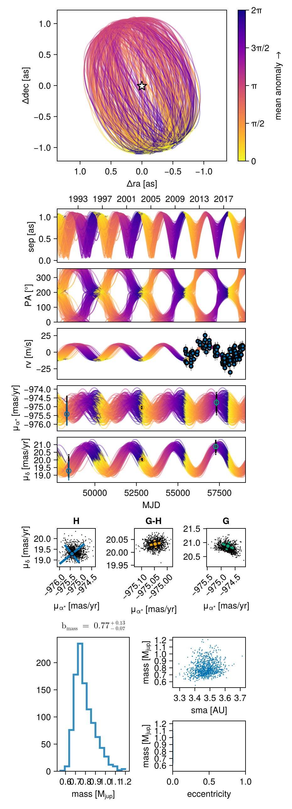
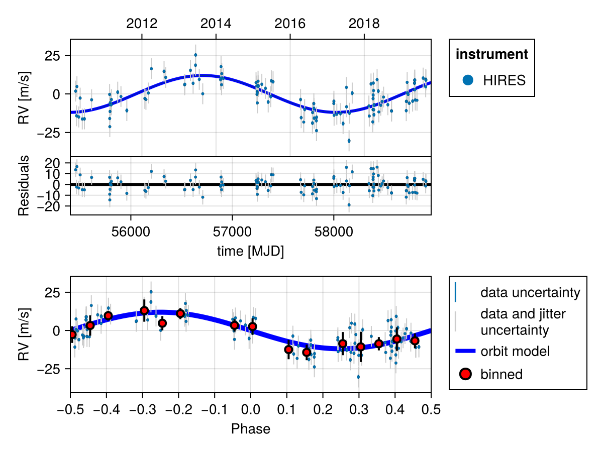
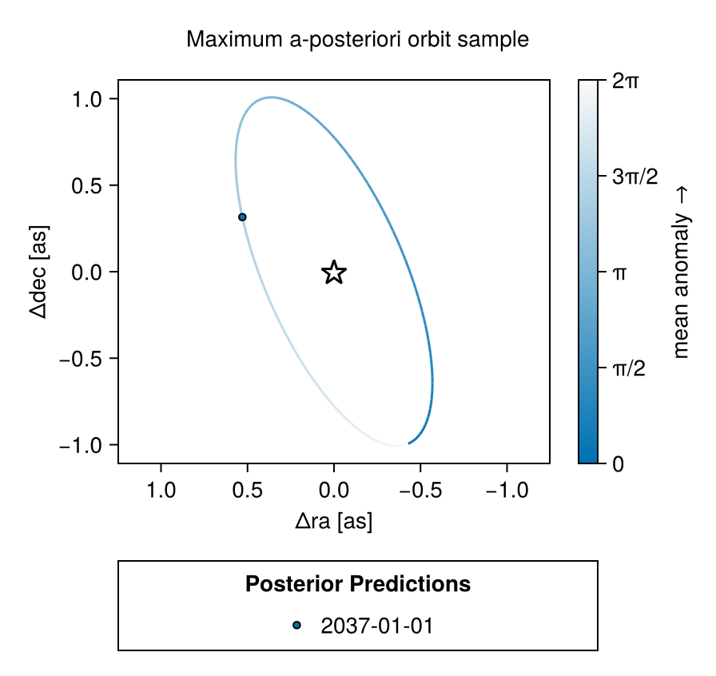
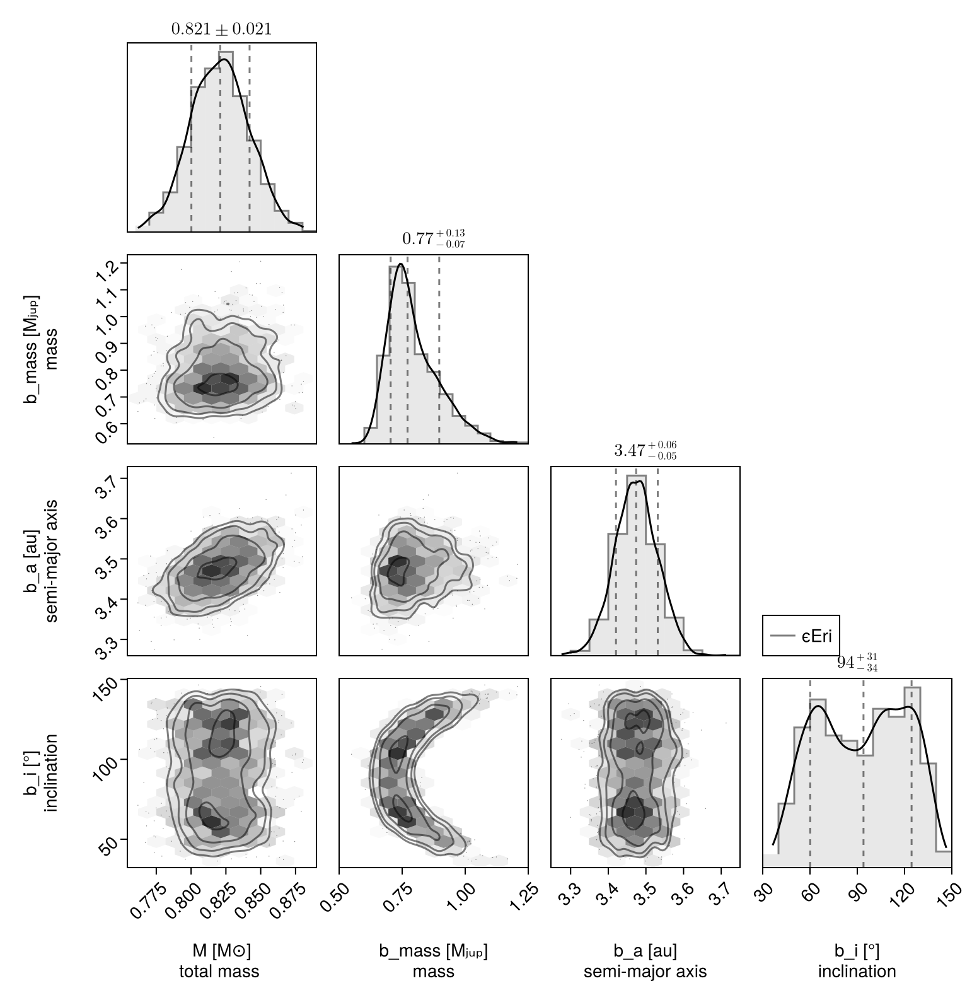

Fit RV and Proper Motion Anomaly
In this example, we will fit an orbit model to a combination of radial velocity and Hipparcos-GAIA proper motion anomaly for the star $\epsilon$ Eridani. We will use some of the radial velocity data collated in Mawet et al 2019.
Radial velocity modelling is supported in Octofitter via the extension package OctofitterRadialVelocity. To install it, run pkg> add OctofitterRadialVelocity
Datasets from two different radial velocity insturments are included and modelled together with separate jitters and instrumental offsets.
using Octofitter, OctofitterRadialVelocity, Distributions, PlanetOrbits, CairoMakie
gaia_id = 5164707970261890560
@planet b Visual{KepOrbit} begin
# For speed of example, we are fitting a circular orbit only.s
e = 0
ω=0.0
mass ~ Uniform(0, 3)
a ~ Uniform(3, 10)
i ~ Sine()
Ω ~ Uniform(0,2pi)
τ ~ Uniform(0,1.0)
P = √(b.a^3/system.M)
tp = b.τ*b.P*365.25 + 58849 # reference epoch for τ. Choose an MJD date near your data.
end # No planet astrometry is included since it has not yet been directly detected
# We will load in data from one RV instruments.
# We use `MarginalizedStarAbsoluteRVLikelihood` instead of
# `StarAbsoluteRVLikelihood` to automatically marginalize out
# the radial velocity zero point of each instrument, saving one parameter.
hires_data = OctofitterRadialVelocity.HIRES_rvs("HD22049")
rvlike_hires = MarginalizedStarAbsoluteRVLikelihood(
hires_data,
instrument_name="HIRES",
jitter=:jitter_hires,
)MarginalizedStarAbsoluteRVLikelihood Table with 4 columns and 117 rows:
inst_idx epoch rv σ_rv
┌────────────────────────────────
1 │ 1 55455.5 5.48 1.05
2 │ 1 55464.6 -10.52 1.02
3 │ 1 55468.6 8.43 0.95
4 │ 1 55486.5 -11.29 1.09
5 │ 1 55500.5 0.95 0.96
6 │ 1 55521.4 -12.6 0.98
7 │ 1 55542.4 -12.52 1.14
8 │ 1 55613.2 -0.15 0.97
9 │ 1 55790.6 3.34 0.89
10 │ 1 55791.6 -12.31 1.01
11 │ 1 55792.6 -17.59 0.86
12 │ 1 55794.6 -7.73 0.87
13 │ 1 55796.6 -2.02 0.81
14 │ 1 55797.6 -3.27 0.87
15 │ 1 55806.6 -3.42 0.99
16 │ 1 55808.6 -0.02 1.0
17 │ 1 55870.5 4.78 1.19
⋮ │ ⋮ ⋮ ⋮ ⋮We load the HGCA data for this target:
hgca_like = HGCALikelihood(;gaia_id, N_ave=1)HGCALikelihood Table with 3 columns and 4 rows:
epoch meas inst
┌────────────────────
1 │ 48312.2 ra hip
2 │ 48423.4 dec hip
3 │ 57322.8 ra gaia
4 │ 57278.7 dec gaiaIn the interests of time, we set N_ave=1 to speed up the computation. This parameter controls how the model smears out the simulated Gaia and Hipparcos measurements. For a real target, leave it at the default value once you have completed testing.
@system ϵEri begin
M ~ truncated(Normal(0.82, 0.02),lower=0.5, upper=1.5) # (Baines & Armstrong 2011).
plx ~ gaia_plx(;gaia_id)
pmra ~ Normal(-975, 10)
pmdec ~ Normal(20, 10)
# Jitter per instrument
jitter_hires ~ LogUniform(0.1, 100) # m/s
end hgca_like rvlike_hires b
# Build model
model = Octofitter.LogDensityModel(ϵEri)LogDensityModel for System ϵEri of dimension 10 and 121 epochs with fields .ℓπcallback and .∇ℓπcallback
Now sample. You could use HMC via octofit or tempered sampling via octofit_pigeons. When using tempered sampling, make sure to start julia with julia --thread=auto. Each additional round doubles the number of posterior samples, so n_rounds=10 gives 1024 samples. You should adjust n_chains to be roughly double the Λ value printed out during sample, and n_chains_variational to be roughly double the Λ_var column.
using Pigeons
results, pt = octofit_pigeons(model, n_rounds=10, n_chains=10, n_chains_variational=0, explorer=SliceSampler());[ Info: Sampler running with multiple threads : true
[ Info: Likelihood evaluated with multiple threads: false
[ Info: Determining initial positions and metric using pathfinder
┌ Info: Found a sample of initial positions
└ initial_logpost_range = (-888.4954113215902, -878.0295245974858)
─────────────────────────────────────────────────────────────────────────────────────────────────────────────
scans restarts Λ time(s) allc(B) log(Z₁/Z₀) min(α) mean(α) min(αₑ) mean(αₑ)
────────── ────────── ────────── ────────── ────────── ────────── ────────── ────────── ────────── ──────────
2 0 3.06 0.116 2.98e+06 -1.4e+04 0 0.66 1 1
4 0 3.84 0.144 3.88e+04 -2.36e+03 0 0.573 1 1
8 0 4.06 0.271 5.39e+04 -1.44e+03 0 0.549 1 1
16 0 5.56 0.545 6.24e+04 -1.02e+03 1.29e-171 0.382 1 1
32 0 5.69 1.05 8.78e+04 -834 9.34e-26 0.367 1 1
64 4 1.95 2.45 2.63e+07 -810 0.33 0.784 1 1
128 18 1.65 4.84 4.64e+07 -811 0.789 0.817 1 1
256 38 1.59 9.7 9.26e+07 -810 0.796 0.823 1 1
512 92 1.49 19.5 1.85e+08 -811 0.801 0.834 1 1
1.02e+03 180 1.56 38.8 3.7e+08 -811 0.771 0.826 1 1
─────────────────────────────────────────────────────────────────────────────────────────────────────────────We can now plot the results with a multi-panel plot:
octoplot(model, results, show_mass=true)
We can also plot just the RV curve from the maximum a-posteriori fit:
fig = Octofitter.rvpostplot(model, results)
We can see what the visual orbit looks like for the maximum a-posteriori sample (note, we would need to run an optimizer to get the true MAP value; this is just the MCMC sample with higest posterior density):
i_max = argmax(results[:logpost][:])
fig = octoplot(
model,
results[i_max,:,:],
# change the colour map a bit:
colormap=Makie.cgrad([Makie.wong_colors()[1], "#FAFAFA"]),
show_astrom=true,
show_astrom_time=false,
show_rv=false,
show_hgca=false,
mark_epochs_mjd=[
mjd("2037")
]
)
Label(fig[0,1], "Maximum a-posteriori orbit sample")
Makie.resize_to_layout!(fig)
fig
And a corner plot:
using CairoMakie, PairPlots
octocorner(model, results, small=true)